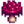

Ada Taciri
Gezinti kısmına atla
Arama kısmına atla
| Ada Taciri | |
 | |
| Açık Saatler: | Her zaman |
| Adres: | Zencefil Adası |
| Oturanlar: | |
Ada Taciri, Zencefil Adası'nda bulunan tüccar bir mavikuştur. Çöl Tüccarı gibi, Ada Taciri de altın kabul etmez ve başka eşyalar ile takas yaparak ticaret yapar.
Ada Taciri,  10 Altın Ceviz karşılığında Ada Çiftlik Evi alındıktan sonra açılır.
10 Altın Ceviz karşılığında Ada Çiftlik Evi alındıktan sonra açılır.
Kalıcı Stok
| Görsel | İsim | Açıklama | Fiyat |
|---|---|---|---|
| Işınlanma Totemi: Çiftlik | Işınlanma Totemi | ||
| Gölevez Yumrusu | Yazın ekilir. 10 günde yetişir. Su kenarına ekilirse daha çabuk yetişir. | ||
| Ananas Tohumu | Yazın ekilir. 14 günde yetişir ve sonrasında yetişmeye devam eder. |  Magma Mantarı (1) | |
| Altın Hindistan Cevizi | Bu sert cevizi ancak işini bilen bir varlık kırabilir.
(Sadece en az bir tane Altın Hindistan Cevizi kırıldıktan sonra alınabilir) |
||
 |
Tropik Televizyon | Evin içine yerleştirilebilir. | |
| Orman Meşalesi | Evin içine yerleştirilebilir. | ||
| Muz Fidanı | Muzun olgunlaşması 28 gün sürer. Zencefil Adası'na dikildiğinde yıl boyunca, öteki türlü sadece yazın meyve verir. | ||
| Mango Fidanı | Mangonun olgunlaşması 28 gün sürer. Zencefil Adası'na dikildiğinde yıl boyunca, öteki türlü sadece yazın meyve verir. | ||
 |
Yabani Çift Kişilik Yatak | Evin içine yerleştirilebilir. | |
 |
Tropik Yatak | Evin içine yerleştirilebilir. | |
| Maun Tohumu | Maun ağacı yetiştirmek için ekilir. | ||
| Luau Eteği | Luau'ya özel olarak yapılmış etek. | ||
| Muzlu Muhallebi Tarifi | Muzlu Muhallebi yapma tarifi. | ||
| Üstün Tutucu Toprak Tarifi | Üstün Tutucu Toprak yapma tarifi. |
Dönüşlü Stok
Galaksi Ruhu ögesi yalnızca oyuncu Qi'nin meydan okumalarında doğabilen 50 tehlikeli canavarı öldürdükten sonra satın alınabilir olur. Bundan sonra ise sadece mevsimin son gününde alınabilir.
| Görsel | İsim | Açıklama | Fiyat | Satıldığı Günler |
|---|---|---|---|---|
| Tropik Sandalye | Evin içine yerleştirilebilir. | Mevsimin Çift Numaralı Günleri | ||
 |
Küçük Şapka | Aerodinamiği öne çıkan bir şapka. | Her Pazartesi | |
| Palmiye Süsü | Evin içine yerleştirilebilir. | Her Salı | ||
 |
Mavikuş Maskesi | En sevdiğin ada tacirine benzemek için takabilirsin. | Her Çarşamba | |
 |
'Yanardağ' Fotoğrafı | Evin içine yerleştirilebilir. | Her Perşembe | |
 |
Büyük Kovboy Şapkası | Daha ekstrem boyutlarda bir kovboy şapkası. | Her Cuma | |
 |
Okyanus Kilimi | Evin içine yerleştirilebilir. | Her Cumartesi | |
 |
Tropik Çift Kişilik Yatak | Evin içine yerleştirilebilir. | Her Pazar | |
| Galaksi Ruhu | 3 tanesi bir araya getirilip bir galaksi silahına döndürüldüğünde asıl haline ulaşır.
(En az 50 tehlikeli canavar öldürdükten sonra kullanılabilir.[1]) |
Mevsimin Son Günü |
Referanslar
- ↑ Locations.IslandNorth::getIslandMerchantTradeStock oyun kodunu inceleyin.
Geçmiş
- 1.5: Eklendi.
| Binalar | ||
|---|---|---|
| Tüccarlar | Ada Taciri • Balıkçı • Bay Qi'nin Ceviz Odası • Büyücü'nün Kulesi • Çöl Tüccarı • Demirci • Dondurma Standı • Gezgin Araba • Harvey'nin Sağlık Ocağı • JojaMart • Kumarhane • Maceraperestler Loncası • Marangoz Atölyesi • Marnie'nin Çiftliği • Pierre'in Bakkalı • Vaha • Yanardağdaki Cüce • Yıkık Ev • Yıldızkaydı Salonu | |
| Evler | Ada Çiftlik Evi • Ağaç Ev • Başkan'ın Köşkü • Çadır • Çiftlik Evi • Elliott'ın Barakası • Irmak Sokağı, No: 1 • Irmak Sokağı, No: 2 • Karavan • Leah'nın Barakası • Dağ Sokağı, No: 24 • Söğüt Sokağı, No: 1 • Söğüt Sokağı, No: 2 | |
| Çiftlik Yapıları | Çiftçilik | Ahır • At Ahırı • Balçıkça Kümesi • Balık Havuzu • Baraka • Kulübe • Değirmen • Kuyu • Kümes • Sera • Silo |
| Özel | Ada Dikilitaşı • Altın Saat • Çiftlik Dikilitaşı • Çöl Dikilitaşı • Junimo Barakası • Su Dikilitaşı • Toprak Dikilitaşı | |
| Diğer Binalar | Araştırma Çadırı • Cadı'nın Barakası • Halkevi • Hamam • Joja Deposu • Köpek Oyun Alanı • Müze • Sinema Salonu | |